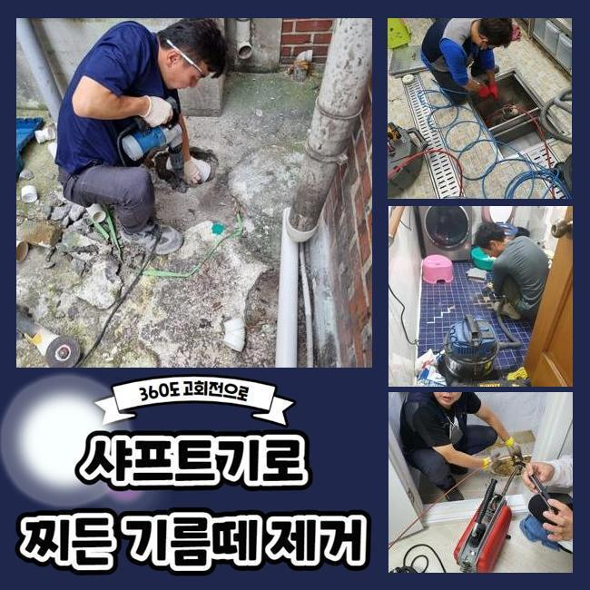
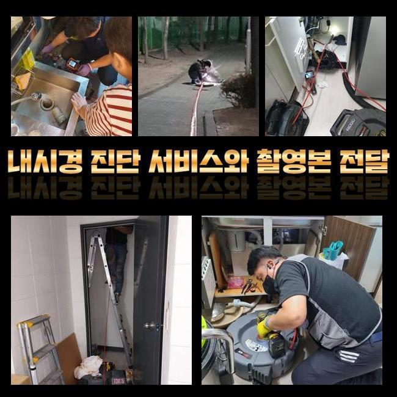
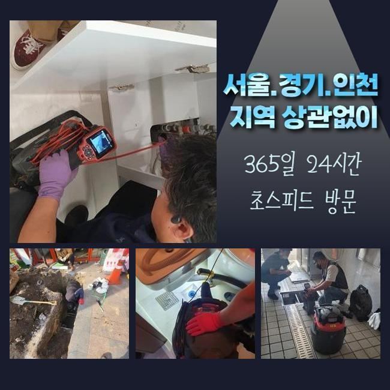
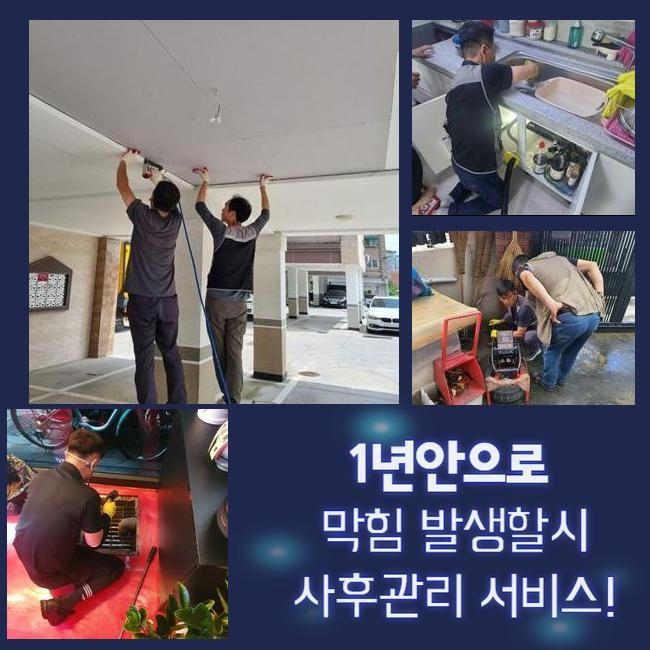
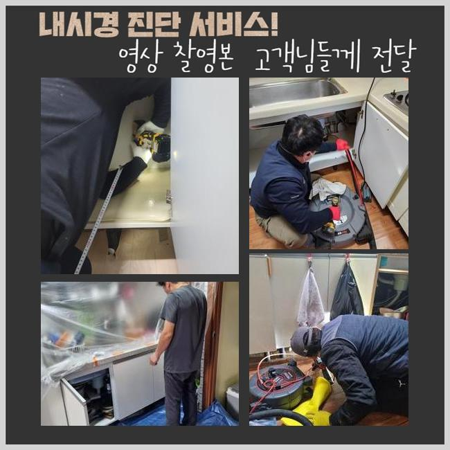
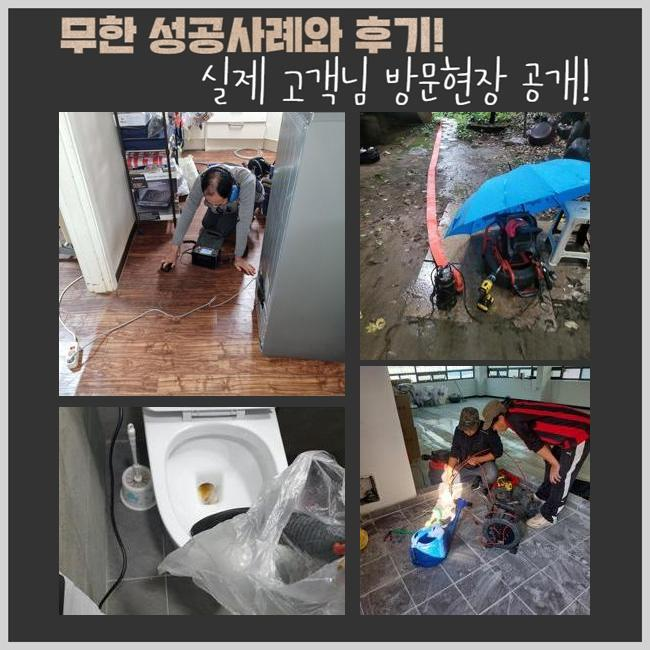

🏠 연수구 옥련동싱크대막힘 동춘동 오수맨홀청소 누수
용인 싱크대막힘 전문 시공 후기

📋 작업 개요
- 위치: 용인
- 서비스 유형: 싱크대막힘, 하수구막힘, 배관막힘, 맨홀막힘, 누수수리, 뚫는업체, 배관청소, 고압세척
- 작업 일시: 2024. 10. 18. 9:48
- 업체명: 하수구수사대 (010-5615-2118)
🔍 문제 상황
연수구 옥련동싱크대막힘 동춘동 오수맨홀청소 누수
물을 사용할 때 하수관에 각종 사유로 석회물질이 퇴적 될 수 있습니다
석회질의 경우 일단 생기게되면 암석처럼 강력하게 응고되어 자체적으로 해결하기 힘든 경우가 많이 발생합니다
하수관 안에 굳어있는 불순물을 과도하게 떼어내려다가는 하수도가 망가질 위험성이 있어 직접 볼 수 있는 상태이더라도 최신 기구와 약품들을 동원하여 떼내야 해요
화장실 배수구 막힘이 생길땐 어떻게 위험없이 처리할 수 있을까요 저희 배관 막힘을 집중적으로 다루는 전문가가 이번 사례에서 배수 막힘을 확실하게 해소한 경험을 소개하겠습니다
오전시간에 방문 요청을 하신 곳은 공동 주택에 살고 있는 고객님인데 화장실 배관막힘으로 의뢰하셨어요
저희 전문가는 특수 장치를 챙긴 후 즉시 찾아갔습니다
도착후 확인하니 욕실 바닥면 하수도에서 물이 느리게 흐르고 있었어요
고객님은 샤워를 하면 대략 한 시간 남짓 대기해야 물이 빠진다며 어려움을 이야기 하셨어요
가정 내에서 세척제를 활용해 막힌 배수관를 해결했지만 단 며칠만 개선될 뿐이고 화장실의 역한 배수구 냄새 원인은 소거되지 않았다고 말씀하셨어요

🔎 원인 분석
💡 전문가 진단: 정밀 진단 장비를 사용하여 슬러지의 고착 여부를 판명하고 타격/세척 작업을 실시했습니다.
시간이 갈수록 막힘 주기가 단축되고 화장실 하수관 약취가 올라와서 여러가지로 불편들이 발생한 상황으로 이번엔 전문기사를 통해 하수관 악취도 함께 작업하기로 판단을 내리셨습니다
우선적으로 석션기계를 활용해 흐르지 않는 하수와 이물질을 없앤 후에 배수관 안쪽으로 배관 진단 내시경 카메라기구를 삽입해보니 흰색 뭉치가 확인되었습니다
이 물질은 석회 성분으로 물과 접촉하면 더 강하게 굳어서 배수구에 붙어버리면 제거하기 쉽지 않아요
여러분 또한 바닥 또는 벽면에 궅은 시멘트 흔적을 물과 세척제로 아무리 닦아도 완벽하게 되돌리기 힘들었던 상황 있으시죠 배수관 역시 물리적으로 없애려고 하면 하수관 자체가 파손될 수 있어요
그러므로 석회성분을 손상없이 녹여 제거하는 특수 약품을 넣어주는 것이 필요합니다
고객께 석회질 덩이로 하수관막힘 상태를 설명한 다음 석회물질을 녹여내는 약제를 하수관에 넉넉히 채워주고 대략 30분 쯤 기다렸어요
본 사례처럼 단단한 석회질이 나타났을 때는 계획없이 기기를 넣어 작업하기 보단 약품으로 녹여낸 뒤 제거하는 편이 적합한 조치입니다
석회성분을 풀어주는 약제를 투입한 다음 몇 분정도 시간이 흐르면 거품이 나타나게 되는데 이 시점에서 미온수를 다량으로 흘려주면서 씻어내면 중화되면서 뭉쳐있던 석회질이 부드럽게 변화합니다
이 같은 약품은 보통사람이 구입할 수 없기에 배수로가 꽉 막혔거나 석회질이 관찰되면 특화된 방법으로 처리하는 전문팀에 의뢰하는 것이 적절한 방식입니다
욕실은 타일 타일 사이 줄눈을 채워주는 본드나 직접 방수 작업을 하며 썼던 미장제품의 일부분이 들어가 석회질 덩어리가 일어나는 경우도 있어요
화장실 배수구 악취가 퍼질 땐 지체없이 전문기사에게 맡겨야 불필요한 타격을 방지할 수 있어요

🔧 작업 과정
욕실 하수관로 막힘 나쁜 냄새가 번질 때 고객님도 지금까지 청소제품을 여러 개 이용해도 하수배관 막힘문제가 처리되지 않은 까닭을 이제 납득했다고 이야기하셨어요
막힘 이유는 장소마다 달라서 배수구 내시경 같은 장치를 넣어 자세하게 막힌 부위를 알아보지 않는다면 확실한 복구가 곤란해집니다
저희 하수도를 복원하는 전문기사가 대량의 물을 부은 후 한번 더 배관안을 확인해보니 석회질 파편과 모발이 한데 엉키며 단단해진 덩어리로 물 흐름을 방해하고 있었어요
배수 트렌치가 세밀하지 않아 오염물질이 물과 함께 내려갔던 것으로 추측되었습니다
능력좋은 기술자라 한다고 해도 육안으로 하수배관 속 모습을 확실하게 확인하는 건 간단하지 않습니다
그래서 먼저 내시경 카메라 기기를 활용하여 하수도 안쪽 모습을 체크하는 것이 포인트입니다
플렉스 샤프트기계 동작시에도 배수관 안의 상태를 끊임없이 살펴보기 위해 내시경 카메라 장비를 빼지말고 뚫는 제거 과정을 시도해야합니다
하수도 한가운데에 붙어있던 석회 파편과 모발을 깎아내며 없애고 나서 다시금 속 안을 면밀히 조사해보니 그외의 오염물이나 기름 찌꺼기들은 목격되지 않았어요
이에따라 더 이상의 제거 과정이 불필요한 것으로 진단하게 되었습니다
배관 작업이 잘 이뤄졌는지 또 다시 자세하게 검토해드렸어요
배관 청소를 바라보던 고객께서 의문을 가졌던 항목에 대해 안내해드리고 일상에서 배수로 유지관리를 어떤 방식으로 해야 문제가 없는지에 대한 정보도 명확하게 설명했어요
욕실 배수관 또는 싱크대 배수관이 막히는 일은 짧은기간동안 일어나는 상황이 아니라 긴시간동안 불순물과 기름찌꺼기가 누적되면서 점차 거대해지며 딱딱해져서 그렇습니다
그러므로 일정한 날짜에 가열한 물을 붓거나 불순물들이 유입되지 않게 점검하는 것이 도움이 됩니다
하수배관 청소를 완벽히 마무리 한 후 내시경 카메라 장비를 빼지 않은 채 속 안의 상황을 관찰하기 위해 통수 검사를 실행했습니다
초반과 비교해서 배수 장애 없이 확실하게 잘 흘러가는 모습이 나타났어요
하수구 마개 부분에도 수도밸브를 열어 혹여 물 솟구침이 일어나지는 않는지 체크했더니 아예 문제가 없는 배관으로 모든 단계를 마칠 수 있었습니다


✅ 작업 완료
샤프트장치로 오염물을 제거한 뒤 석션장비로 남은 오염물들을 흡인하여 치우면서 고객님 세대의 하수배관에서 나온 찌꺼기들을 석션기기 용기에서 검사해봤습니다
모발 뭉텅이와 다양한 사이즈의 석회질 찌꺼기 상당수가 추출되었고 이것을 별도로 처리하고 후 처리까지 완벽하게 실시하고 나니 전 시공을 완수했습니다
일반적인 주택이나 상가 등 대형 건물 어디에서나 수도시설을 사용하는 장소라면 이 같은 하수도 막힘 상황 때문에 고충을 겪게 될 수 있습니다
유사한 현상을 겪고 있는 분들은 전문업체의 의뢰를 하는 것이 유리합니다
합당한 수리비로 즉각 문제현장에 적합한 작업을 진행해드리므로 작업을 원하시는 분들은 어느때든 저희 하수관 막힘을 책임지는 전문가에게 전화 주세요




⚠️ 베란다 누수 및 방수 관리 방법
- ✅ 비가 많이 올 때 창틀 주변이나 아래층 천장에 얼룩이 생기는지 정기적으로 확인해 보세요.
- ✅ 우수관 주변 실리콘 마감이 들뜨거나 깨진 틈새가 있는지 손상 여부를 수시로 체크하세요.
- ✅ 베란다 바닥 타일의 줄눈(메지)이 소실되면 그 틈으로 물이 침투하여 누수가 유발됩니다.
- ✅ 누수 의심 증상 발견 시 방치하면 아래층 손실이 커지므로 즉시 전문가의 진단을 받으십시오.
💡 핵심 정리
- 확실한 장비 작업(내시경 점검 및 샤프트 스케일링)으로 원인을 뿌리 뽑습니다.
- 작업 후 1년 이내에 동일한 부위 재발 시 100% 무상 A/S 서비스를 보장합니다.
- 서울 · 경기 · 인천 전 지역에 24시간 언제든 긴급 출동할 수 있도록 항시 대기 중입니다.
❓ 자주 묻는 질문 (FAQ)
🚨 용인 싱크대막힘 문제로 고민이신가요?
정확한 원인 진단과 확실한 시공으로 재발 없는 해결을 약속드립니다.
24시간 긴급 출동 | 서울 · 경기 · 인천 전지역 | 1년 내 재발 시 무상 A/S